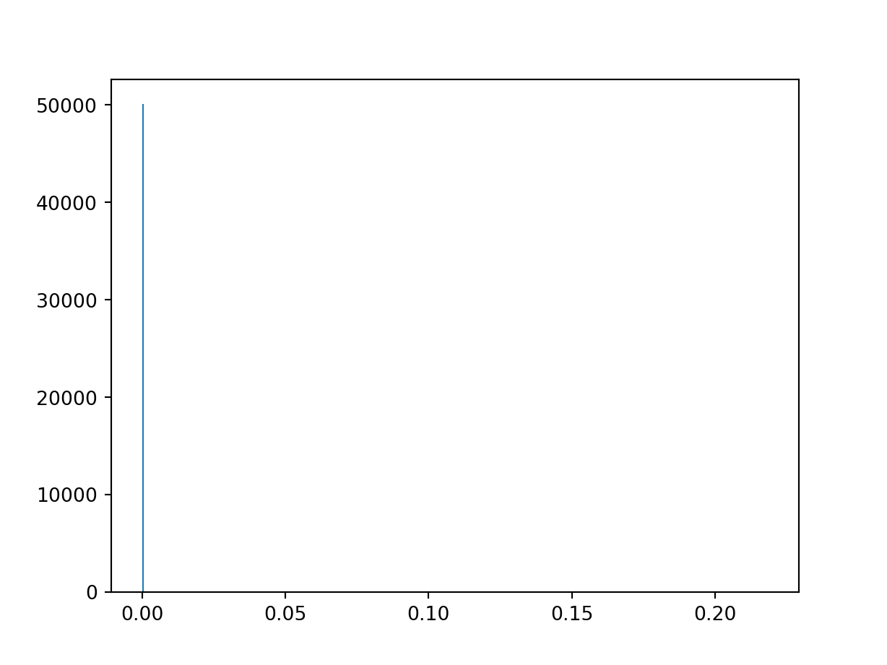

import torch
from transformers import AutoModelForCausalLM, AutoTokenizer
# Initialize the model and tokenizer
tokenizer = AutoTokenizer.from_pretrained("gpt2")
Downloading: 0%| | 0.00/26.0 [00:00<?, ?B/s]
Downloading: 100%|##########| 26.0/26.0 [00:00<00:00, 12.4kB/s]
Downloading: 0%| | 0.00/665 [00:00<?, ?B/s]
Downloading: 100%|##########| 665/665 [00:00<00:00, 344kB/s]
Downloading: 0%| | 0.00/1.04M [00:00<?, ?B/s]
Downloading: 3%|3 | 31.7k/1.04M [00:00<00:05, 176kB/s]
Downloading: 10%|9 | 100k/1.04M [00:00<00:03, 292kB/s]
Downloading: 22%|##2 | 232k/1.04M [00:00<00:01, 485kB/s]
Downloading: 50%|##### | 526k/1.04M [00:00<00:00, 920kB/s]
Downloading: 100%|##########| 1.04M/1.04M [00:00<00:00, 1.38MB/s]
Downloading: 0%| | 0.00/456k [00:00<?, ?B/s]
Downloading: 7%|7 | 33.8k/456k [00:00<00:02, 192kB/s]
Downloading: 22%|##1 | 99.3k/456k [00:00<00:01, 290kB/s]
Downloading: 54%|#####4 | 247k/456k [00:00<00:00, 525kB/s]
Downloading: 100%|##########| 456k/456k [00:00<00:00, 818kB/s]
Downloading: 0%| | 0.00/1.36M [00:00<?, ?B/s]
Downloading: 2%|2 | 33.8k/1.36M [00:00<00:06, 195kB/s]
Downloading: 7%|7 | 99.3k/1.36M [00:00<00:04, 290kB/s]
Downloading: 18%|#8 | 247k/1.36M [00:00<00:02, 523kB/s]
Downloading: 39%|###8 | 525k/1.36M [00:00<00:00, 913kB/s]
Downloading: 81%|########1 | 1.10M/1.36M [00:00<00:00, 1.71MB/s]
Downloading: 100%|##########| 1.36M/1.36M [00:00<00:00, 1.45MB/s]model = AutoModelForCausalLM.from_pretrained("gpt2")
Downloading: 0%| | 0.00/548M [00:00<?, ?B/s]
Downloading: 0%| | 2.23M/548M [00:00<00:24, 22.2MB/s]
Downloading: 1%| | 4.73M/548M [00:00<00:22, 23.8MB/s]
Downloading: 1%|1 | 7.11M/548M [00:00<00:24, 22.2MB/s]
Downloading: 2%|1 | 9.72M/548M [00:00<00:22, 23.6MB/s]
Downloading: 2%|2 | 12.2M/548M [00:00<00:22, 24.0MB/s]
Downloading: 3%|2 | 14.6M/548M [00:00<00:22, 23.5MB/s]
Downloading: 3%|3 | 17.0M/548M [00:00<00:23, 23.1MB/s]
Downloading: 4%|3 | 19.3M/548M [00:00<00:23, 22.8MB/s]
Downloading: 4%|3 | 21.7M/548M [00:00<00:22, 23.1MB/s]
Downloading: 4%|4 | 24.2M/548M [00:01<00:22, 23.7MB/s]
Downloading: 5%|4 | 26.6M/548M [00:01<00:22, 23.3MB/s]
Downloading: 5%|5 | 28.9M/548M [00:01<00:22, 23.4MB/s]
Downloading: 6%|5 | 31.4M/548M [00:01<00:21, 23.8MB/s]
Downloading: 6%|6 | 33.9M/548M [00:01<00:21, 23.9MB/s]
Downloading: 7%|6 | 36.3M/548M [00:01<00:22, 22.5MB/s]
Downloading: 7%|7 | 38.5M/548M [00:01<00:23, 21.8MB/s]
Downloading: 7%|7 | 40.7M/548M [00:01<00:23, 21.2MB/s]
Downloading: 8%|7 | 42.9M/548M [00:01<00:25, 20.1MB/s]
Downloading: 8%|8 | 44.9M/548M [00:02<00:25, 20.0MB/s]
Downloading: 9%|8 | 46.9M/548M [00:02<00:24, 20.1MB/s]
Downloading: 9%|9 | 49.4M/548M [00:02<00:23, 21.2MB/s]
Downloading: 9%|9 | 51.6M/548M [00:02<00:23, 21.5MB/s]
Downloading: 10%|9 | 53.9M/548M [00:02<00:22, 22.1MB/s]
Downloading: 10%|# | 56.9M/548M [00:02<00:20, 24.3MB/s]
Downloading: 11%|# | 59.7M/548M [00:02<00:19, 25.3MB/s]
Downloading: 11%|#1 | 62.2M/548M [00:02<00:19, 25.1MB/s]
Downloading: 12%|#1 | 64.8M/548M [00:02<00:19, 25.3MB/s]
Downloading: 12%|#2 | 67.4M/548M [00:02<00:19, 25.2MB/s]
Downloading: 13%|#2 | 69.9M/548M [00:03<00:19, 25.1MB/s]
Downloading: 13%|#3 | 72.5M/548M [00:03<00:18, 25.3MB/s]
Downloading: 14%|#3 | 75.0M/548M [00:03<00:18, 25.2MB/s]
Downloading: 14%|#4 | 77.8M/548M [00:03<00:18, 25.9MB/s]
Downloading: 15%|#4 | 80.4M/548M [00:03<00:18, 25.3MB/s]
Downloading: 15%|#5 | 82.9M/548M [00:03<00:18, 25.4MB/s]
Downloading: 16%|#5 | 85.5M/548M [00:03<00:18, 24.4MB/s]
Downloading: 16%|#6 | 87.9M/548M [00:03<00:19, 23.4MB/s]
Downloading: 16%|#6 | 90.3M/548M [00:03<00:21, 21.6MB/s]
Downloading: 17%|#6 | 92.5M/548M [00:03<00:21, 21.4MB/s]
Downloading: 17%|#7 | 94.7M/548M [00:04<00:20, 21.7MB/s]
Downloading: 18%|#7 | 97.0M/548M [00:04<00:20, 21.9MB/s]
Downloading: 18%|#8 | 99.6M/548M [00:04<00:19, 23.1MB/s]
Downloading: 19%|#8 | 102M/548M [00:04<00:18, 23.9MB/s]
Downloading: 19%|#9 | 105M/548M [00:04<00:18, 24.1MB/s]
Downloading: 20%|#9 | 107M/548M [00:04<00:17, 24.6MB/s]
Downloading: 20%|## | 110M/548M [00:04<00:17, 25.5MB/s]
Downloading: 21%|## | 113M/548M [00:04<00:17, 25.4MB/s]
Downloading: 21%|##1 | 115M/548M [00:04<00:17, 25.4MB/s]
Downloading: 21%|##1 | 118M/548M [00:05<00:16, 25.6MB/s]
Downloading: 22%|##1 | 120M/548M [00:05<00:17, 24.2MB/s]
Downloading: 22%|##2 | 123M/548M [00:05<00:17, 25.0MB/s]
Downloading: 23%|##2 | 126M/548M [00:05<00:17, 24.5MB/s]
Downloading: 23%|##3 | 128M/548M [00:05<00:17, 23.9MB/s]
Downloading: 24%|##3 | 131M/548M [00:05<00:16, 24.6MB/s]
Downloading: 24%|##4 | 133M/548M [00:05<00:16, 24.5MB/s]
Downloading: 25%|##4 | 136M/548M [00:05<00:16, 24.8MB/s]
Downloading: 25%|##5 | 138M/548M [00:05<00:16, 24.7MB/s]
Downloading: 26%|##5 | 141M/548M [00:05<00:16, 24.9MB/s]
Downloading: 26%|##6 | 143M/548M [00:06<00:16, 24.8MB/s]
Downloading: 27%|##6 | 146M/548M [00:06<00:16, 24.8MB/s]
Downloading: 27%|##7 | 148M/548M [00:06<00:15, 25.0MB/s]
Downloading: 28%|##7 | 151M/548M [00:06<00:15, 25.6MB/s]
Downloading: 28%|##8 | 154M/548M [00:06<00:16, 23.4MB/s]
Downloading: 28%|##8 | 156M/548M [00:06<00:17, 22.7MB/s]
Downloading: 29%|##8 | 159M/548M [00:06<00:16, 23.5MB/s]
Downloading: 29%|##9 | 161M/548M [00:06<00:16, 24.1MB/s]
Downloading: 30%|##9 | 164M/548M [00:06<00:16, 23.9MB/s]
Downloading: 30%|### | 166M/548M [00:06<00:15, 24.9MB/s]
Downloading: 31%|### | 170M/548M [00:07<00:13, 27.3MB/s]
Downloading: 31%|###1 | 173M/548M [00:07<00:13, 28.1MB/s]
Downloading: 32%|###2 | 175M/548M [00:07<00:13, 28.0MB/s]
Downloading: 33%|###2 | 178M/548M [00:07<00:13, 26.9MB/s]
Downloading: 33%|###3 | 181M/548M [00:07<00:13, 26.6MB/s]
Downloading: 34%|###3 | 184M/548M [00:07<00:14, 24.8MB/s]
Downloading: 34%|###3 | 186M/548M [00:07<00:15, 23.4MB/s]
Downloading: 34%|###4 | 189M/548M [00:07<00:14, 24.5MB/s]
Downloading: 35%|###4 | 191M/548M [00:07<00:14, 24.5MB/s]
Downloading: 35%|###5 | 194M/548M [00:08<00:14, 24.7MB/s]
Downloading: 36%|###5 | 197M/548M [00:08<00:13, 26.2MB/s]
Downloading: 36%|###6 | 200M/548M [00:08<00:13, 26.2MB/s]
Downloading: 37%|###6 | 202M/548M [00:08<00:12, 27.0MB/s]
Downloading: 37%|###7 | 205M/548M [00:08<00:13, 25.8MB/s]
Downloading: 38%|###8 | 209M/548M [00:08<00:12, 28.2MB/s]
Downloading: 39%|###8 | 211M/548M [00:08<00:12, 27.6MB/s]
Downloading: 39%|###9 | 215M/548M [00:08<00:11, 29.6MB/s]
Downloading: 40%|###9 | 218M/548M [00:08<00:10, 30.4MB/s]
Downloading: 40%|#### | 221M/548M [00:08<00:10, 30.5MB/s]
Downloading: 41%|#### | 224M/548M [00:09<00:10, 29.5MB/s]
Downloading: 42%|####1 | 228M/548M [00:09<00:10, 30.9MB/s]
Downloading: 42%|####2 | 231M/548M [00:09<00:10, 30.1MB/s]
Downloading: 43%|####2 | 234M/548M [00:09<00:11, 28.2MB/s]
Downloading: 43%|####3 | 237M/548M [00:09<00:11, 27.2MB/s]
Downloading: 44%|####3 | 240M/548M [00:09<00:11, 26.6MB/s]
Downloading: 44%|####4 | 242M/548M [00:09<00:12, 25.3MB/s]
Downloading: 45%|####4 | 245M/548M [00:09<00:12, 24.4MB/s]
Downloading: 45%|####5 | 247M/548M [00:10<00:12, 23.2MB/s]
Downloading: 46%|####5 | 250M/548M [00:10<00:18, 16.3MB/s]
Downloading: 46%|####5 | 252M/548M [00:10<00:17, 17.4MB/s]
Downloading: 46%|####6 | 254M/548M [00:10<00:15, 18.6MB/s]
Downloading: 47%|####6 | 256M/548M [00:10<00:15, 18.4MB/s]
Downloading: 47%|####7 | 258M/548M [00:10<00:15, 19.3MB/s]
Downloading: 48%|####7 | 261M/548M [00:10<00:13, 20.6MB/s]
Downloading: 48%|####8 | 263M/548M [00:10<00:12, 22.1MB/s]
Downloading: 48%|####8 | 266M/548M [00:11<00:13, 21.6MB/s]
Downloading: 49%|####8 | 268M/548M [00:11<00:12, 21.6MB/s]
Downloading: 49%|####9 | 270M/548M [00:11<00:12, 21.5MB/s]
Downloading: 50%|####9 | 272M/548M [00:11<00:13, 21.1MB/s]
Downloading: 50%|##### | 274M/548M [00:11<00:13, 20.5MB/s]
Downloading: 50%|##### | 277M/548M [00:11<00:12, 21.5MB/s]
Downloading: 51%|##### | 279M/548M [00:11<00:12, 22.3MB/s]
Downloading: 51%|#####1 | 282M/548M [00:11<00:11, 23.1MB/s]
Downloading: 52%|#####1 | 284M/548M [00:11<00:11, 23.2MB/s]
Downloading: 52%|#####2 | 286M/548M [00:11<00:11, 22.2MB/s]
Downloading: 53%|#####2 | 289M/548M [00:12<00:12, 20.5MB/s]
Downloading: 53%|#####3 | 291M/548M [00:12<00:12, 20.1MB/s]
Downloading: 53%|#####3 | 293M/548M [00:12<00:12, 19.8MB/s]
Downloading: 54%|#####3 | 295M/548M [00:12<00:13, 19.1MB/s]
Downloading: 54%|#####4 | 297M/548M [00:12<00:13, 18.4MB/s]
Downloading: 55%|#####4 | 299M/548M [00:12<00:12, 19.9MB/s]
Downloading: 55%|#####4 | 301M/548M [00:12<00:12, 20.1MB/s]
Downloading: 55%|#####5 | 303M/548M [00:12<00:11, 21.3MB/s]
Downloading: 56%|#####5 | 306M/548M [00:12<00:11, 21.0MB/s]
Downloading: 56%|#####6 | 308M/548M [00:13<00:10, 22.0MB/s]
Downloading: 57%|#####6 | 310M/548M [00:13<00:11, 21.1MB/s]
Downloading: 57%|#####7 | 313M/548M [00:13<00:10, 22.3MB/s]
Downloading: 58%|#####7 | 315M/548M [00:13<00:10, 22.8MB/s]
Downloading: 58%|#####7 | 318M/548M [00:13<00:10, 22.7MB/s]
Downloading: 58%|#####8 | 320M/548M [00:13<00:10, 21.1MB/s]
Downloading: 59%|#####8 | 322M/548M [00:13<00:10, 22.1MB/s]
Downloading: 59%|#####9 | 325M/548M [00:13<00:10, 21.7MB/s]
Downloading: 60%|#####9 | 327M/548M [00:13<00:10, 22.0MB/s]
Downloading: 60%|###### | 329M/548M [00:13<00:10, 21.1MB/s]
Downloading: 60%|###### | 331M/548M [00:14<00:10, 19.8MB/s]
Downloading: 61%|###### | 333M/548M [00:14<00:11, 19.1MB/s]
Downloading: 61%|######1 | 335M/548M [00:14<00:10, 19.5MB/s]
Downloading: 62%|######1 | 338M/548M [00:14<00:10, 20.4MB/s]
Downloading: 62%|######1 | 340M/548M [00:14<00:10, 20.0MB/s]
Downloading: 62%|######2 | 342M/548M [00:14<00:10, 20.0MB/s]
Downloading: 63%|######2 | 344M/548M [00:14<00:10, 20.0MB/s]
Downloading: 63%|######3 | 346M/548M [00:14<00:09, 20.3MB/s]
Downloading: 64%|######3 | 348M/548M [00:14<00:09, 22.0MB/s]
Downloading: 64%|######3 | 351M/548M [00:15<00:08, 22.0MB/s]
Downloading: 64%|######4 | 353M/548M [00:15<00:08, 22.8MB/s]
Downloading: 65%|######4 | 355M/548M [00:15<00:08, 22.2MB/s]
Downloading: 65%|######5 | 358M/548M [00:15<00:08, 22.5MB/s]
Downloading: 66%|######5 | 360M/548M [00:15<00:08, 21.8MB/s]
Downloading: 66%|######6 | 363M/548M [00:15<00:07, 23.5MB/s]
Downloading: 67%|######6 | 365M/548M [00:15<00:08, 21.9MB/s]
Downloading: 67%|######7 | 367M/548M [00:15<00:08, 22.2MB/s]
Downloading: 67%|######7 | 370M/548M [00:15<00:08, 22.1MB/s]
Downloading: 68%|######7 | 372M/548M [00:16<00:08, 21.4MB/s]
Downloading: 68%|######8 | 374M/548M [00:16<00:08, 21.5MB/s]
Downloading: 69%|######8 | 377M/548M [00:16<00:07, 23.2MB/s]
Downloading: 69%|######9 | 380M/548M [00:16<00:06, 25.0MB/s]
Downloading: 70%|######9 | 382M/548M [00:16<00:07, 22.3MB/s]
Downloading: 70%|####### | 384M/548M [00:16<00:07, 21.1MB/s]
Downloading: 71%|####### | 387M/548M [00:16<00:07, 21.4MB/s]
Downloading: 71%|#######1 | 389M/548M [00:16<00:07, 22.6MB/s]
Downloading: 72%|#######1 | 392M/548M [00:16<00:06, 24.0MB/s]
Downloading: 72%|#######2 | 395M/548M [00:16<00:05, 27.0MB/s]
Downloading: 73%|#######2 | 398M/548M [00:17<00:05, 26.4MB/s]
Downloading: 73%|#######3 | 402M/548M [00:17<00:05, 28.6MB/s]
Downloading: 74%|#######3 | 405M/548M [00:17<00:04, 29.9MB/s]
Downloading: 74%|#######4 | 408M/548M [00:17<00:04, 29.6MB/s]
Downloading: 75%|#######4 | 411M/548M [00:17<00:04, 30.0MB/s]
Downloading: 76%|#######5 | 415M/548M [00:17<00:04, 32.1MB/s]
Downloading: 76%|#######6 | 419M/548M [00:17<00:03, 35.6MB/s]
Downloading: 77%|#######7 | 424M/548M [00:17<00:03, 38.4MB/s]
Downloading: 78%|#######8 | 428M/548M [00:17<00:03, 39.5MB/s]
Downloading: 79%|#######8 | 432M/548M [00:17<00:02, 40.3MB/s]
Downloading: 80%|#######9 | 437M/548M [00:18<00:02, 41.5MB/s]
Downloading: 81%|######## | 441M/548M [00:18<00:02, 42.9MB/s]
Downloading: 81%|########1 | 446M/548M [00:18<00:02, 41.0MB/s]
Downloading: 82%|########2 | 450M/548M [00:18<00:02, 40.9MB/s]
Downloading: 83%|########2 | 454M/548M [00:18<00:02, 40.2MB/s]
Downloading: 84%|########3 | 458M/548M [00:18<00:02, 35.3MB/s]
Downloading: 84%|########4 | 462M/548M [00:18<00:02, 29.9MB/s]
Downloading: 85%|########4 | 465M/548M [00:18<00:02, 28.5MB/s]
Downloading: 85%|########5 | 468M/548M [00:19<00:03, 25.5MB/s]
Downloading: 86%|########5 | 470M/548M [00:19<00:03, 23.5MB/s]
Downloading: 86%|########6 | 473M/548M [00:19<00:03, 22.7MB/s]
Downloading: 87%|########6 | 475M/548M [00:19<00:03, 22.3MB/s]
Downloading: 87%|########7 | 477M/548M [00:19<00:03, 22.5MB/s]
Downloading: 88%|########7 | 480M/548M [00:19<00:03, 21.8MB/s]
Downloading: 88%|########7 | 482M/548M [00:19<00:03, 21.7MB/s]
Downloading: 88%|########8 | 484M/548M [00:19<00:02, 22.5MB/s]
Downloading: 89%|########8 | 487M/548M [00:20<00:02, 23.4MB/s]
Downloading: 89%|########9 | 490M/548M [00:20<00:02, 24.0MB/s]
Downloading: 90%|########9 | 492M/548M [00:20<00:02, 24.2MB/s]
Downloading: 90%|######### | 494M/548M [00:20<00:03, 15.5MB/s]
Downloading: 91%|######### | 497M/548M [00:20<00:03, 16.6MB/s]
Downloading: 91%|######### | 499M/548M [00:20<00:02, 17.4MB/s]
Downloading: 91%|#########1| 501M/548M [00:20<00:02, 18.1MB/s]
Downloading: 92%|#########1| 503M/548M [00:20<00:02, 18.5MB/s]
Downloading: 92%|#########2| 505M/548M [00:21<00:02, 19.5MB/s]
Downloading: 92%|#########2| 507M/548M [00:21<00:02, 19.3MB/s]
Downloading: 93%|#########2| 509M/548M [00:21<00:01, 20.2MB/s]
Downloading: 93%|#########3| 512M/548M [00:21<00:01, 21.9MB/s]
Downloading: 94%|#########3| 515M/548M [00:21<00:01, 23.6MB/s]
Downloading: 94%|#########4| 518M/548M [00:21<00:01, 25.2MB/s]
Downloading: 95%|#########4| 520M/548M [00:21<00:01, 26.2MB/s]
Downloading: 95%|#########5| 523M/548M [00:21<00:00, 25.6MB/s]
Downloading: 96%|#########5| 526M/548M [00:21<00:00, 25.6MB/s]
Downloading: 96%|#########6| 528M/548M [00:21<00:00, 25.0MB/s]
Downloading: 97%|#########6| 531M/548M [00:22<00:00, 25.3MB/s]
Downloading: 97%|#########7| 534M/548M [00:22<00:00, 25.9MB/s]
Downloading: 98%|#########7| 537M/548M [00:22<00:00, 27.3MB/s]
Downloading: 98%|#########8| 540M/548M [00:22<00:00, 28.5MB/s]
Downloading: 99%|#########9| 543M/548M [00:22<00:00, 30.4MB/s]
Downloading: 100%|##########| 548M/548M [00:22<00:00, 24.3MB/s]# Move model to the appropriate device
torch_device = "cuda" if torch.cuda.is_available() else "cpu"
model.to(torch_device)GPT2LMHeadModel(
(transformer): GPT2Model(
(wte): Embedding(50257, 768)
(wpe): Embedding(1024, 768)
(drop): Dropout(p=0.1, inplace=False)
(h): ModuleList(
(0): GPT2Block(
(ln_1): LayerNorm((768,), eps=1e-05, elementwise_affine=True)
(attn): GPT2Attention(
(c_attn): Conv1D()
(c_proj): Conv1D()
(attn_dropout): Dropout(p=0.1, inplace=False)
(resid_dropout): Dropout(p=0.1, inplace=False)
)
(ln_2): LayerNorm((768,), eps=1e-05, elementwise_affine=True)
(mlp): GPT2MLP(
(c_fc): Conv1D()
(c_proj): Conv1D()
(act): NewGELUActivation()
(dropout): Dropout(p=0.1, inplace=False)
)
)
(1): GPT2Block(
(ln_1): LayerNorm((768,), eps=1e-05, elementwise_affine=True)
(attn): GPT2Attention(
(c_attn): Conv1D()
(c_proj): Conv1D()
(attn_dropout): Dropout(p=0.1, inplace=False)
(resid_dropout): Dropout(p=0.1, inplace=False)
)
(ln_2): LayerNorm((768,), eps=1e-05, elementwise_affine=True)
(mlp): GPT2MLP(
(c_fc): Conv1D()
(c_proj): Conv1D()
(act): NewGELUActivation()
(dropout): Dropout(p=0.1, inplace=False)
)
)
(2): GPT2Block(
(ln_1): LayerNorm((768,), eps=1e-05, elementwise_affine=True)
(attn): GPT2Attention(
(c_attn): Conv1D()
(c_proj): Conv1D()
(attn_dropout): Dropout(p=0.1, inplace=False)
(resid_dropout): Dropout(p=0.1, inplace=False)
)
(ln_2): LayerNorm((768,), eps=1e-05, elementwise_affine=True)
(mlp): GPT2MLP(
(c_fc): Conv1D()
(c_proj): Conv1D()
(act): NewGELUActivation()
(dropout): Dropout(p=0.1, inplace=False)
)
)
(3): GPT2Block(
(ln_1): LayerNorm((768,), eps=1e-05, elementwise_affine=True)
(attn): GPT2Attention(
(c_attn): Conv1D()
(c_proj): Conv1D()
(attn_dropout): Dropout(p=0.1, inplace=False)
(resid_dropout): Dropout(p=0.1, inplace=False)
)
(ln_2): LayerNorm((768,), eps=1e-05, elementwise_affine=True)
(mlp): GPT2MLP(
(c_fc): Conv1D()
(c_proj): Conv1D()
(act): NewGELUActivation()
(dropout): Dropout(p=0.1, inplace=False)
)
)
(4): GPT2Block(
(ln_1): LayerNorm((768,), eps=1e-05, elementwise_affine=True)
(attn): GPT2Attention(
(c_attn): Conv1D()
(c_proj): Conv1D()
(attn_dropout): Dropout(p=0.1, inplace=False)
(resid_dropout): Dropout(p=0.1, inplace=False)
)
(ln_2): LayerNorm((768,), eps=1e-05, elementwise_affine=True)
(mlp): GPT2MLP(
(c_fc): Conv1D()
(c_proj): Conv1D()
(act): NewGELUActivation()
(dropout): Dropout(p=0.1, inplace=False)
)
)
(5): GPT2Block(
(ln_1): LayerNorm((768,), eps=1e-05, elementwise_affine=True)
(attn): GPT2Attention(
(c_attn): Conv1D()
(c_proj): Conv1D()
(attn_dropout): Dropout(p=0.1, inplace=False)
(resid_dropout): Dropout(p=0.1, inplace=False)
)
(ln_2): LayerNorm((768,), eps=1e-05, elementwise_affine=True)
(mlp): GPT2MLP(
(c_fc): Conv1D()
(c_proj): Conv1D()
(act): NewGELUActivation()
(dropout): Dropout(p=0.1, inplace=False)
)
)
(6): GPT2Block(
(ln_1): LayerNorm((768,), eps=1e-05, elementwise_affine=True)
(attn): GPT2Attention(
(c_attn): Conv1D()
(c_proj): Conv1D()
(attn_dropout): Dropout(p=0.1, inplace=False)
(resid_dropout): Dropout(p=0.1, inplace=False)
)
(ln_2): LayerNorm((768,), eps=1e-05, elementwise_affine=True)
(mlp): GPT2MLP(
(c_fc): Conv1D()
(c_proj): Conv1D()
(act): NewGELUActivation()
(dropout): Dropout(p=0.1, inplace=False)
)
)
(7): GPT2Block(
(ln_1): LayerNorm((768,), eps=1e-05, elementwise_affine=True)
(attn): GPT2Attention(
(c_attn): Conv1D()
(c_proj): Conv1D()
(attn_dropout): Dropout(p=0.1, inplace=False)
(resid_dropout): Dropout(p=0.1, inplace=False)
)
(ln_2): LayerNorm((768,), eps=1e-05, elementwise_affine=True)
(mlp): GPT2MLP(
(c_fc): Conv1D()
(c_proj): Conv1D()
(act): NewGELUActivation()
(dropout): Dropout(p=0.1, inplace=False)
)
)
(8): GPT2Block(
(ln_1): LayerNorm((768,), eps=1e-05, elementwise_affine=True)
(attn): GPT2Attention(
(c_attn): Conv1D()
(c_proj): Conv1D()
(attn_dropout): Dropout(p=0.1, inplace=False)
(resid_dropout): Dropout(p=0.1, inplace=False)
)
(ln_2): LayerNorm((768,), eps=1e-05, elementwise_affine=True)
(mlp): GPT2MLP(
(c_fc): Conv1D()
(c_proj): Conv1D()
(act): NewGELUActivation()
(dropout): Dropout(p=0.1, inplace=False)
)
)
(9): GPT2Block(
(ln_1): LayerNorm((768,), eps=1e-05, elementwise_affine=True)
(attn): GPT2Attention(
(c_attn): Conv1D()
(c_proj): Conv1D()
(attn_dropout): Dropout(p=0.1, inplace=False)
(resid_dropout): Dropout(p=0.1, inplace=False)
)
(ln_2): LayerNorm((768,), eps=1e-05, elementwise_affine=True)
(mlp): GPT2MLP(
(c_fc): Conv1D()
(c_proj): Conv1D()
(act): NewGELUActivation()
(dropout): Dropout(p=0.1, inplace=False)
)
)
(10): GPT2Block(
(ln_1): LayerNorm((768,), eps=1e-05, elementwise_affine=True)
(attn): GPT2Attention(
(c_attn): Conv1D()
(c_proj): Conv1D()
(attn_dropout): Dropout(p=0.1, inplace=False)
(resid_dropout): Dropout(p=0.1, inplace=False)
)
(ln_2): LayerNorm((768,), eps=1e-05, elementwise_affine=True)
(mlp): GPT2MLP(
(c_fc): Conv1D()
(c_proj): Conv1D()
(act): NewGELUActivation()
(dropout): Dropout(p=0.1, inplace=False)
)
)
(11): GPT2Block(
(ln_1): LayerNorm((768,), eps=1e-05, elementwise_affine=True)
(attn): GPT2Attention(
(c_attn): Conv1D()
(c_proj): Conv1D()
(attn_dropout): Dropout(p=0.1, inplace=False)
(resid_dropout): Dropout(p=0.1, inplace=False)
)
(ln_2): LayerNorm((768,), eps=1e-05, elementwise_affine=True)
(mlp): GPT2MLP(
(c_fc): Conv1D()
(c_proj): Conv1D()
(act): NewGELUActivation()
(dropout): Dropout(p=0.1, inplace=False)
)
)
)
(ln_f): LayerNorm((768,), eps=1e-05, elementwise_affine=True)
)
(lm_head): Linear(in_features=768, out_features=50257, bias=False)
)# Encode the input text
inputs = tokenizer("I enjoy walking with my cute dog", return_tensors="pt")
inputs = inputs.to(torch_device)
# Get model output (logits)
with torch.no_grad():
outputs = model(**inputs)
logits = outputs.logits
# Select logits of the last token and get the top 10 tokens
last_token_logits = logits[0, -1, :]
# the number of tokens
len(last_token_logits)50257# Convert logits to probabilities
probs = torch.softmax(last_token_logits, dim=0)
# plot the probability distribution
import matplotlib.pyplot as plt
plt.hist(probs, bins=500)
# plt.xscale('log', base=10)
# plt.yscale('log', base=10)
plt.show()